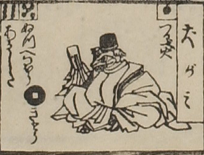

犬神；イヌガミ，男；オトコ

犬神。頭部は犬で、烏帽子をかぶり、公家装束をまとっている。座って、右手に幣を持っている。
出典：親書誌：U426_nichibunken_0082：新版妖怪飛巡雙六；シンパンヨウカイトビマハリスゴロク／日付：2007／資源識別子：U426_nichibunken_0082_0008_0000
Copyright (c)2010- International Research Center for Japanese Studies, Kyoto, Japan. All rights reserved.